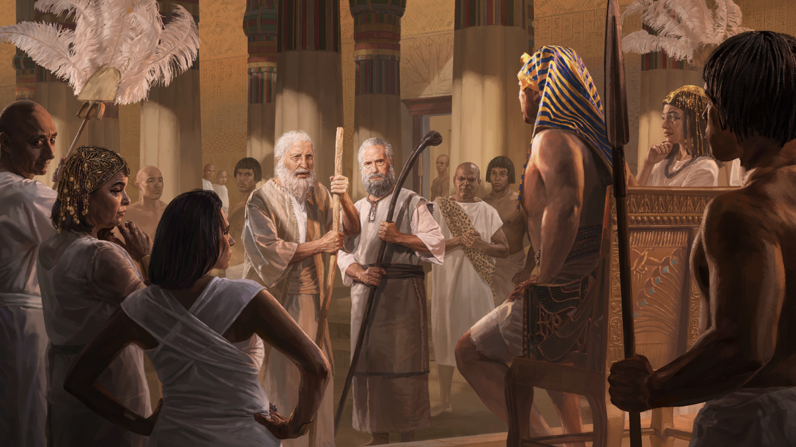
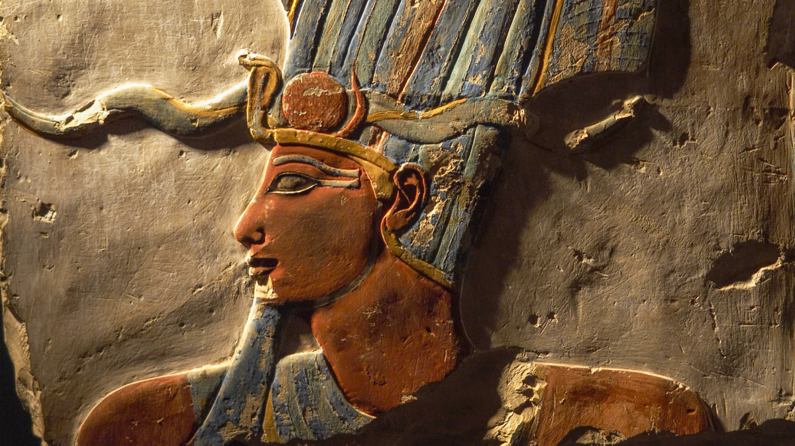
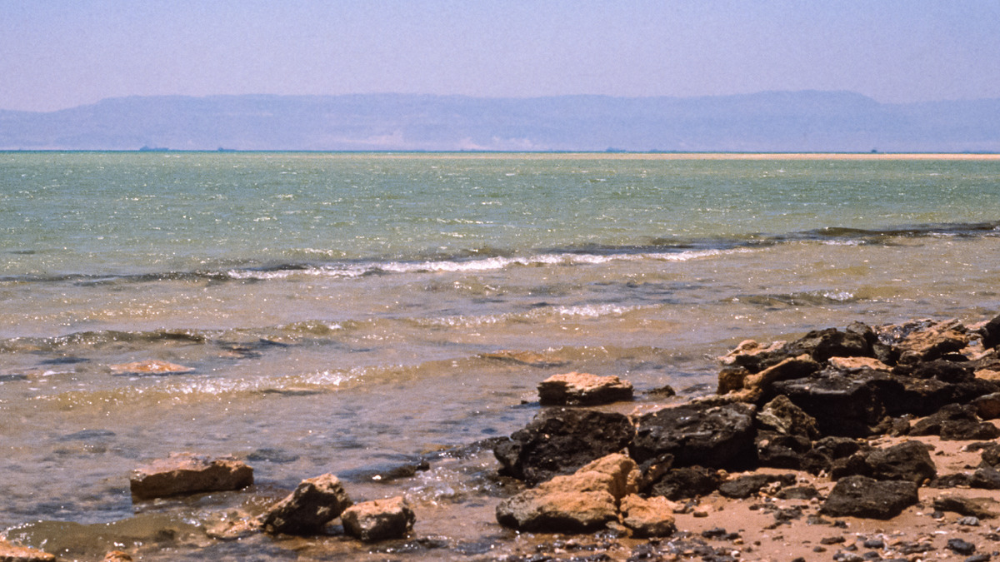
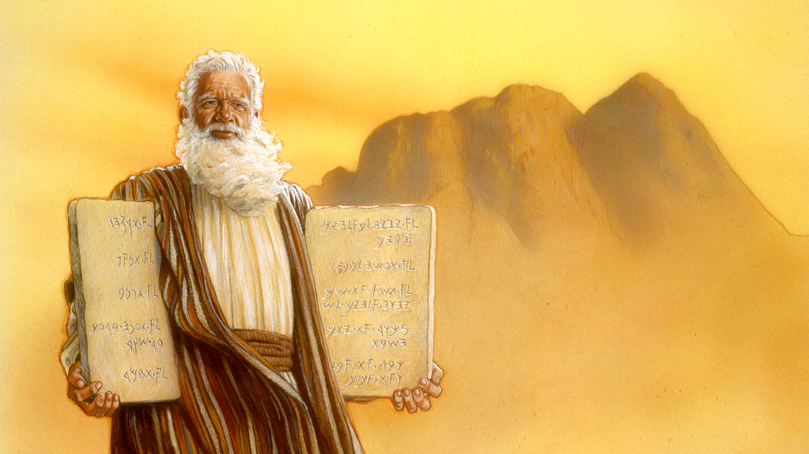

11 Moisés · semana de 5 a 11 de outubro de 2026
Moisés apresenta-se a Faraó
Leia o relato na Bíblia: Êxodo 3; 4; 5; 7:1-11:10; 12:29-41; 13:17-14:31; Deuteronômio 29:2, 3; 34:5-7
Tempo do estudo: 30 minutos (parte 9 da reunião)
Cada parágrafo abaixo traz o conteúdo resumido, com as frases citadas do capítulo, os textos bíblicos escritos por extenso e um comentário pronto. O texto oficial completo está no jw.org e no JW Library: em cada parágrafo há um link que abre direto no ponto certo.
MOISÉS era um novo homem. Ele não achava mais que seria o libertador de Israel. Agora, com cerca de 80 anos, tinha esposa e dois filhos, e tinha passado os últimos 40 anos como um humilde pastor dos rebanhos do sogro, numa terra seca e quente.
Jeová viu o quanto Moisés tinha mudado. Na base do monte Horebe, fez um espinheiro pegar fogo, mas o fogo não destruía o espinheiro. Jeová falou com Moisés por meio de um anjo poderoso e mandou que voltasse ao Egito para libertar o povo. Para encorajá-lo, revelou um aspecto do significado do seu nome: “Eu Me Tornarei O Que Eu Decidir Me Tornar.” Assim, Jeová poderia se tornar um Salvador para o seu povo.
Apesar disso, Moisés se sentia inseguro e não se achava qualificado para falar diante de Faraó. Mas Jeová o corrigiu e, para fortalecer a fé dele, fez algo incrível. Pela primeira vez no registro da Bíblia, Jeová dá a um humano a capacidade de fazer milagres. E deu a Moisés um ajudante e porta-voz, o irmão Arão. Moisés meio a contragosto aceitou a designação. Agora ele seria um messias, um cristo, um homem escolhido por Jeová para salvar o seu povo.
Moisés voltou ao Egito e, com Arão, compareceu diante de Faraó. Só que as coisas não saíram muito bem: em vez de libertar Israel, Faraó mandou que os escravos trabalhassem ainda mais. Jeová mandou Moisés voltar e anunciar a primeira praga: o Nilo virou sangue. Faraó não cedeu. Jeová continuou mandando Moisés falar com Faraó, e a cada praga Moisés obedecia a Jeová com coragem. Mas aquele governante orgulhoso se recusava a escutar.

Cada praga provou que os deuses do Egito, os sacerdotes com suas mágicas e o próprio Faraó não eram nada comparados com Jeová. A partir da quarta praga, só os egípcios eram atingidos, porque Jeová protegia o seu povo. Mesmo assim, Faraó continuou a endurecer o coração. Na nona praga, o Egito ficou em total escuridão, mas os israelitas tinham luz. Faraó concordou em libertá-los, mudou de ideia, e avisou que se Moisés aparecesse diante dele outra vez, ele seria morto.
Moisés precisou enfrentar vez após vez a fúria do governante mais poderoso da Terra
Mesmo assim, Jeová mandou Moisés comparecer diante de Faraó mais uma vez, e ele obedeceu. Veio então a décima e última praga: morreram todos os primogênitos do Egito. Faraó, que perdeu o próprio filho, cedeu, libertou Israel e exigiu uma bênção. Israel estava livre, exatamente 430 anos depois de Abraão ter entrado na Terra Prometida, acompanhado por “um grande número de não israelitas”. Mas Faraó mudou de ideia outra vez e saiu atrás deles com seu grande exército.
Às margens do Mar Vermelho, Moisés e o povo pareciam encurralados. Os israelitas estavam apavorados. Moisés implorou que Jeová os ajudasse, e Jeová respondeu com um dos milagres mais espetaculares que já aconteceram: abriu o mar, e Israel atravessou em solo seco. Quando os israelitas chegaram ao outro lado, Jeová fechou o Mar Vermelho, afogando os egípcios. O exército mais poderoso do mundo tinha sido destruído.
Moisés nunca se esqueceu desses acontecimentos. Sua fé estava mais forte do que nunca. Pelos próximos 40 anos, até morrer com 120 anos de idade, ele liderou o povo de Deus e cuidou dele, sendo um exemplo de fé, amor e coragem.
Para considerar
De que maneiras Moisés mostrou coragem nessa época de sua vida?
Meu comentário comentário base
Analise mais a fundo
1. Não sabemos o nome do Faraó que vivia na época da saída dos israelitas do Egito. Além disso, até hoje não foram encontrados registros egípcios sobre esse acontecimento. Mesmo assim, por que podemos acreditar nesse relato da Bíblia?
(g04 8/4 7 § 4 a 9 § 1)
Meu comentário comentário base
2. Por que as pessoas tinham medo de Faraó?
(w14 15/4 8 § 1) A
Meu comentário comentário base

3. De que forma as Dez Pragas humilharam os deuses do Egito?
(it “Deuses e deusas” §§ 24-26)
Meu comentário comentário base
4. O que indica que o caminho que Jeová abriu era largo o suficiente para todo o povo passar, e quantos israelitas devem ter atravessado o Mar Vermelho?
(it “Êxodo” §§ 46-51) B
Meu comentário comentário base

Medite no que aprendeu
Como o exemplo de coragem de Moisés nos fortalece quando achamos que não somos qualificados para cumprir uma designação de Jeová? (Êxo. 4:10; 7:6, 7)
Meu comentário comentário base
Assim como Arão ajudou Moisés a cumprir sua designação com coragem, como podemos ajudar nossos irmãos hoje? (Êxo. 4:14-16) C
Meu comentário comentário base
De que maneiras você pode imitar a coragem de Moisés nesse relato?
Meu comentário comentário base
Pense no quadro completo
O que esse relato me ensina sobre Jeová?
Meu comentário comentário base
Como esse relato está relacionado com o propósito de Jeová?
Meu comentário comentário base
Quando Moisés for ressuscitado, o que eu gostaria de perguntar para ele sobre esse período de sua vida?
Meu comentário comentário base
Aprenda mais
Veja como o significado do nome de Jeová pode ajudar crianças pequenas a ser corajosas.
Vídeo “O nome de Jeová” (1:54), disponível no jw.org.

O que Moisés aprendeu sobre as qualidades de Jeová com as experiências que passou?
“Conheça os caminhos de Jeová” (w05 15/5 20-25).
Roteiro de 30 minutos
Estudo de livro, oito parágrafos e as quatro seções de pergunta. Os tempos são referência: o que passar de um item, tire do outro.
Abertura com uma pergunta
“Vocês já receberam uma designação e pensaram: não sou a pessoa certa para isso?” Diga que Moisés, aos 80 anos, pensou exatamente isso.
Leitura dos oito parágrafos
Designe um irmão. Se preferir, divida em dois blocos: §1 a §3 e §4 a §8.
Leituras bíblicas com a assistência
Êxodo 4:10-12 e 14:13, 14. O primeiro mostra o medo de Moisés; o segundo, a coragem que ele passou ao povo.
Para considerar
Os quatro momentos de coragem. Aceite dois comentários e complete com Hebreus 11:27.
Analise mais a fundo, as quatro perguntas
Um comentário por pergunta. Na 2, a imagem A e a coroa com a naja. Na 3, peça dois exemplos de deuses humilhados. Na 4, a imagem B.
Medite no que aprendeu
Três minutos para quem se sente incapaz, que é o ponto mais pessoal do capítulo. Dois para ser um Arão, com a imagem C. Dois para as outras coragens.
Pense no quadro completo
O que aprendemos sobre Jeová e a promessa a Abraão cumprida no dia exato.
Encerramento
Recomende o vídeo “O nome de Jeová” para as famílias com crianças e feche com Êxodo 14:13: “Não tenham medo. Mantenham-se firmes.”
Se o tempo apertar
Pode cortar: a pergunta 1 de “Analise mais a fundo”, resumindo em uma frase, e a última pergunta do quadro completo.
Não pode faltar: o significado do nome de Jeová (§2), a resposta de Jeová à insegurança de Moisés (Êxodo 4:11, 12) e Moisés voltando a Faraó mesmo ameaçado.
Resumo: os pontos altos deste estudo
Para o encerramento, ou para revisar depois em casa.
O caminho que percorremos
- Jeová chama um homem que se acha incapaz. Manso e inseguro, Moisés recebe a designação e a promessa. §1 a §3
- Coragem diante do homem mais poderoso. Dez pragas, dez vezes os deuses do Egito humilhados. §4 a §6
- Encurralados no mar. Jeová abre o caminho e destrói o exército. §7
- Uma fé que nunca esqueceu. Quarenta anos liderando o povo. §8
Os sete pontos altos
- Os 40 anos como pastor abrandaram Moisés e o tornaram humilde.
- “Eu Me Tornarei O Que Eu Decidir Me Tornar”: Jeová se torna o que for preciso.
- Para cada desculpa de Moisés, Jeová deu uma resposta, e no fim deu Arão.
- Obedecer a Jeová piorou as coisas no começo, e Moisés continuou.
- Cada praga humilhou um deus do Egito; a última atingiu o “deus” filho do Faraó.
- Israel saiu no dia em que se completaram os 430 anos.
- “Não tenham medo. Mantenham-se firmes e vejam a salvação da parte de Jeová.”
Três frases para o encerramento
- “Aos 40, Moisés se achava pronto e não estava. Aos 80, se achava incapaz, e Jeová o usou.”
- “A pergunta não é se você é capaz. É se Jeová está com você.”
- “O rei que disse ‘não conheço Jeová’ terminou pedindo uma bênção.”
Suas respostas
Cada campo já vem com um comentário pronto. O que você ajustar fica salvo automaticamente neste navegador, neste aparelho. Para levar para outro aparelho, ou guardar uma cópia, baixe o arquivo aqui e carregue no outro lado.
O arquivo é um .json com os seus comentários e as anotações marcadas como vistas. Carregar substitui o que estiver escrito nesta página, e a página avisa antes.
Preparação baseada no capítulo 11 do livro Ande Corajosamente com Deus, “Moisés apresenta-se a Faraó”. Publicações consultadas nas anotações: Despertai! de 8/4/2004, p. 7-9; A Sentinela de 15/4/2014, p. 8; A Sentinela de 15/5/2005, p. 20-25; Estudo Perspicaz, verbetes “Deuses e deusas” e “Êxodo”. Bíblia: Tradução do Novo Mundo da Bíblia Sagrada (Edição de Estudo), wol.jw.org, com 747 versículos incluídos nesta cópia para funcionar sem internet.
Os resumos, os comentários base, as anotações coloridas e o roteiro são notas de preparação pessoal, não material publicado pelas Testemunhas de Jeová. O capítulo, as imagens e o texto da Bíblia são propriedade da Watch Tower Bible and Tract Society. O texto oficial completo está no jw.org e no JW Library, pelos links de cada parágrafo.